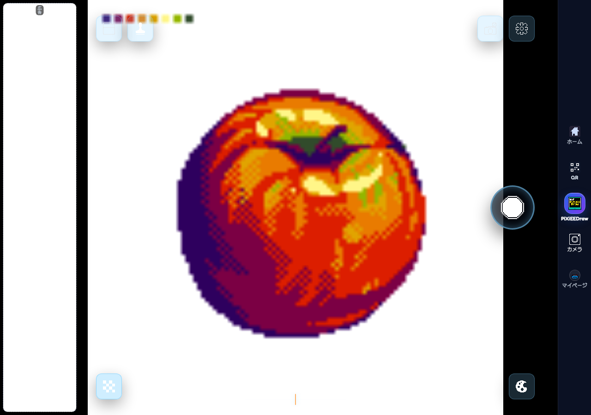
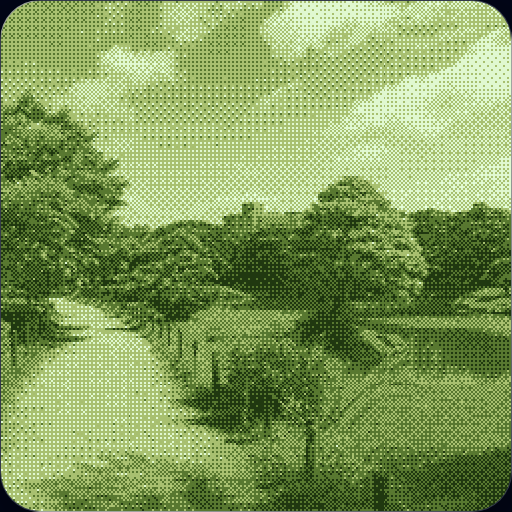

カメラでも画像でも試せる
思いついた時にその場で見た目を変えられます。
camera convert
写真やカメラ映像を登録不要でドット絵風に変換し、下絵や素材づくりに使えるブラウザツールです。
overview
PiXiEELENSは、写真やカメラ映像をドット絵風の見た目に変換するためのツールです。
ホームから直接開けますが、検索から来た人にはこのページで用途と始め方を確認できます。
撮って終わりではなく、そのままPiXiEEDrawへつなげて仕上げる導線を持てます。
features
scenes
how to use
samples

ツールの世界観と用途がすぐ伝わる OGP 画像です。

街並みのような風景をそのまま映しながら、見え方をすぐ試せる実画面です。

初期設定に合わせた4色・256px・ディザリングの見え方をそのまま確認できるサンプルです。
faq
使えます。カメラ利用時はブラウザの権限許可が必要です。
必要ならPiXiEEDrawへ送って仕上げできます。
不要です。ブラウザでそのまま使います。